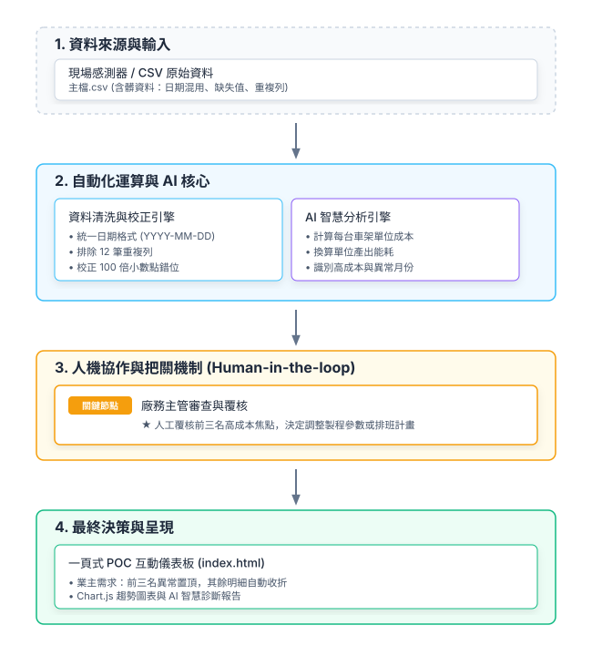

★ 廠務重點關注（前三大高成本／能耗異常時段）
最高能耗與單位成本異常前三名
根據廠務主管要求：優先聚焦前三名最該擔心的項目，其餘明細已自動收折於下方。
AI 智慧分析助手
自動換算單位成本、分析能耗並點出異常月份
點擊上方「執行 AI 診斷分析」以載入 AI 洞察報告、單位成本換算結果及異常月份識別。
每月能耗與總金額趨勢
追蹤各月份烤爐電力與費用變化
各製程階段單位成本比較
前段、中段、後段與完成階段之單位車架成本
系統架構與人機協作把關機制
明確標示「資料從哪來、AI 在哪一步、人在哪一步把關」

資料處理與清洗流程
從原始髒資料到清洗、特徵工程與儀表板應用的完整管線
flowchart TD
subgraph S1 [1. 資料載入階段]
A["讀取原始 CSV 資料
(主檔.csv, 共 2,012 筆)
包含日、數、金額等髒資料"] end subgraph S2 [2. 資料清洗與校正引擎] B["重複資料排除
drop_duplicates()
(移除 12 筆重複列)"] --> C["日期格式標準化
統一轉換為 YYYY-MM-DD
(處理 0615、6月15日、2026/6/15)"] C --> D["極端離群值與小數點校正
(偵測 >30x 中位數之金額/數量異常，修正 100 倍小數點錯位)"] D --> E["缺失值填補與處理
數值欄位以中位數補齊
來源備註補為「未填寫」"] end subgraph S3 [3. 特徵工程與指標計算] F["核心指標運算
• 單位成本 = 金額 ÷ 數量
• 單位能耗 = 耗時分鐘 ÷ 數量
• 月份與製程分群彙總"] end subgraph S4 [4. 輸出與應用] G["產出淨化後的結構化資料
(cleaned_data.json)"] --> H["一頁式儀表板呈現
• 前三名高成本異常置頂 (業主需求)
• Chart.js 圖表與 AI 智慧診斷"] end A --> B E --> F F --> G style A fill:#f8fafc,stroke:#cbd5e1,stroke-width:2px style B fill:#e0f2fe,stroke:#38bdf8,stroke-width:2px style C fill:#e0f2fe,stroke:#38bdf8,stroke-width:2px style D fill:#e0f2fe,stroke:#38bdf8,stroke-width:2px style E fill:#e0f2fe,stroke:#38bdf8,stroke-width:2px style F fill:#ede9fe,stroke:#8b5cf6,stroke-width:2px style G fill:#d1fae5,stroke:#10b981,stroke-width:2px style H fill:#fef3c7,stroke:#f59e0b,stroke-width:2px
(主檔.csv, 共 2,012 筆)
包含日、數、金額等髒資料"] end subgraph S2 [2. 資料清洗與校正引擎] B["重複資料排除
drop_duplicates()
(移除 12 筆重複列)"] --> C["日期格式標準化
統一轉換為 YYYY-MM-DD
(處理 0615、6月15日、2026/6/15)"] C --> D["極端離群值與小數點校正
(偵測 >30x 中位數之金額/數量異常，修正 100 倍小數點錯位)"] D --> E["缺失值填補與處理
數值欄位以中位數補齊
來源備註補為「未填寫」"] end subgraph S3 [3. 特徵工程與指標計算] F["核心指標運算
• 單位成本 = 金額 ÷ 數量
• 單位能耗 = 耗時分鐘 ÷ 數量
• 月份與製程分群彙總"] end subgraph S4 [4. 輸出與應用] G["產出淨化後的結構化資料
(cleaned_data.json)"] --> H["一頁式儀表板呈現
• 前三名高成本異常置頂 (業主需求)
• Chart.js 圖表與 AI 智慧診斷"] end A --> B E --> F F --> G style A fill:#f8fafc,stroke:#cbd5e1,stroke-width:2px style B fill:#e0f2fe,stroke:#38bdf8,stroke-width:2px style C fill:#e0f2fe,stroke:#38bdf8,stroke-width:2px style D fill:#e0f2fe,stroke:#38bdf8,stroke-width:2px style E fill:#e0f2fe,stroke:#38bdf8,stroke-width:2px style F fill:#ede9fe,stroke:#8b5cf6,stroke-width:2px style G fill:#d1fae5,stroke:#10b981,stroke-width:2px style H fill:#fef3c7,stroke:#f59e0b,stroke-width:2px